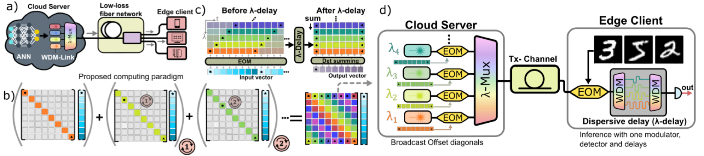

Machine Learning Systems

Through exploiting sparsity, quantization, and co-designing the electrical and optical hardware, our work aims to improve the performance, energy efficiency, and robustness (against adversarial attacks, soft errors, and permanent faults) of modern deep learning systems.
Related Publications
Abhishek Tyagi, Arjun Iyer, William H Renninger, Christopher Kanan, Yuhao Zhu
ICML 2025
Abhishek Tyagi, Arjun Iyer, Christopher Kanan, William H Renninger, Yuhao Zhu
CLEO 2025
Arjun Iyer, Abhishek Tyagi, Liam Young, Yuhao Zhu, William H Renninger
CLEO 2025
Arjun Iyer, Abhishek Tyagi, Yuhao Zhu, William H Renninger
CLEO 2025
Zihan Liu, Xinhao Luo, Junxian Guo, Wentao Ni, Yangjie Zhou, Yue Guan, Cong Guo, Weihao Cui, Yu Feng, Minyi Guo, Yuhao Zhu, Minjia Zhang, Jingwen Leng, Chen Jin
HPCA 2025
Yue Guan, Yuxian Qiu, Jingwen Leng, Fan Yang, Shuo Yu, Yunxin Liu, Yu Feng, Yuhao Zhu, Lidong Zhou, Yun Liang, Chen Zhang, Chao Li, Minyi Guo
ASPLOS 2024
Zihan Liu, Wentao Ni, Jingwen Leng, Yu Feng, Cong Guo, Quan Chen, Chao Li, Minyi Guo, Yuhao Zhu
ASPLOS 2024
Abhishek Tyagi, Reiley Jeyapaul, Chuteng Zhou, Paul Whatmough, Yuhao Zhu
ISPASS 2024
Cong Guo, Jiaming Tang, Weiming Hu, Jingwen Leng, Chen Zhang, Fan Yang, Yunxin Liu, Minyi Guo, Yuhao Zhu
ISCA 2023
Abhishek Tyagi, Yiming Gan, Shaoshan Liu, Bo Yu, Paul Whatmough, Yuhao Zhu
HPCA 2023
Cong Guo, Chen Zhang, Jingwen Leng, Zihan Liu, Fan Yang, Yunxin Liu, Minyi Guo, Yuhao Zhu
★ IEEE Micro Top Picks from Computer Architecture Conferences in 2022 (Honorable Mention)
MICRO 2022
Zhi-Gang Liu, Paul Whatmough, Yuhao Zhu, Matt Mattina
★ Best Paper Nominee
HPCA 2022
Cong Guo, Yuxian Qiu, Jingwen Leng, Xiaotian Gao, Chen Zhang, Yunxin Liu, Fan Yang, Yuhao Zhu, Minyi Guo
ICLR 2022
Yangjie Zhou, Mengtian Yang, Cong Guo, Jingwen Leng, Yun Liang, Quan Chen, Minyi Guo, Yuhao Zhu
IISWC 2021
Yiming Gan, Yuxian Qiu, Jingwen Leng, Minyi Guo, Yuhao Zhu
MICRO 2020
Haichuan Yang, Shupeng Gui, Yuhao Zhu, Ji Liu
CVPR 2020
Cong Guo, Bo Yang Hsueh, Jingwen Leng, Yuxian Qiu, Yue Guan, Zehuan Wang, Xiaoying Jia, Xipeng Li, Minyi Guo, Yuhao Zhu
SC 2020
Anand Samajdar, J. Joseph, Yuhao Zhu, Paul Whatmough, Matt Mattina, Tushar Krishna
ISPASS 2020
Cong Guo, Yangjie Zhou, Jingwen Leng, Yuhao Zhu, Zidong Du, Quan Chen, Chao Li, Bin Yao, Minyi Guo
DAC 2020
Haichuan Yang, Yuhao Zhu, Ji Liu
ICLR 2019
Haichuan Yang, Yuhao Zhu, Ji Liu
CVPR 2019
Yuxian Qiu, Jingwen Leng, Cong Guo, Quan Chen, Chao Li, Minyi Guo, Yuhao Zhu
CVPR 2019
Yu Wang, Yuhao Zhu, Glenn Ko, Brandon Reagen, Gu-Yeon Wei, David Brooks
ISPASS 2019
Yuwei Hu, Jidong Zhai, Dinghua Li, Yifan Gong, Yuhao Zhu, Wei Liu, Lei Su, Jiangming Jin
IPDPS 2018
Yuhao Zhu, Matthew Mattina, Paul Whatmough
SysML 2018
arXiv 2018
No matching items